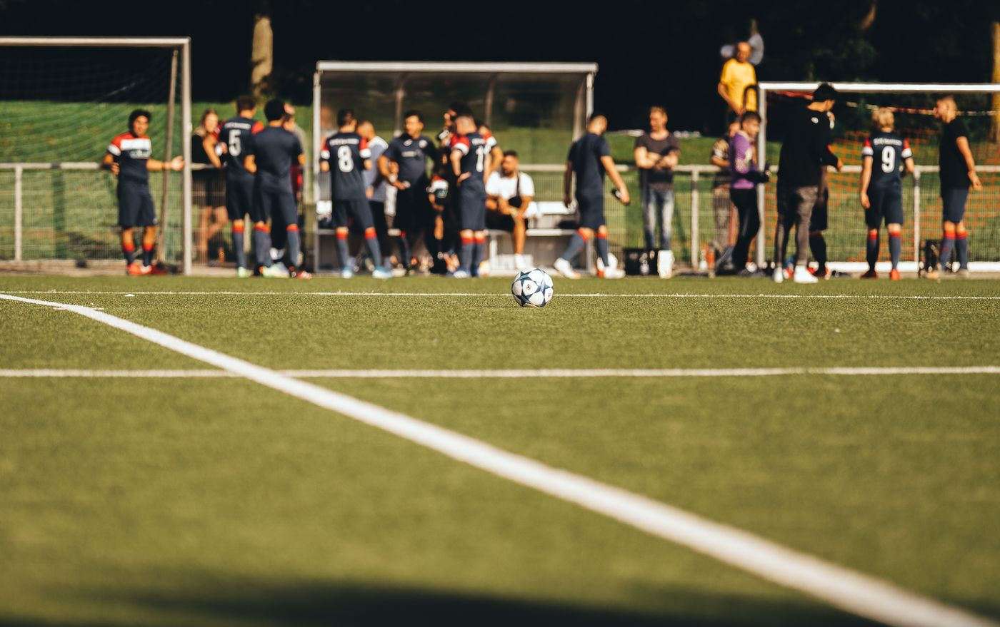
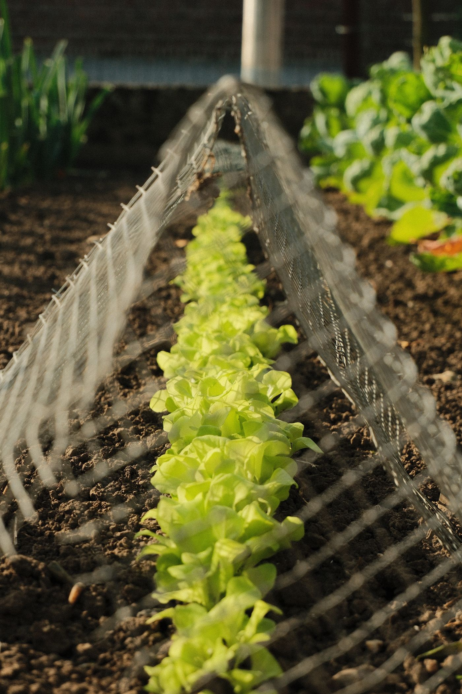
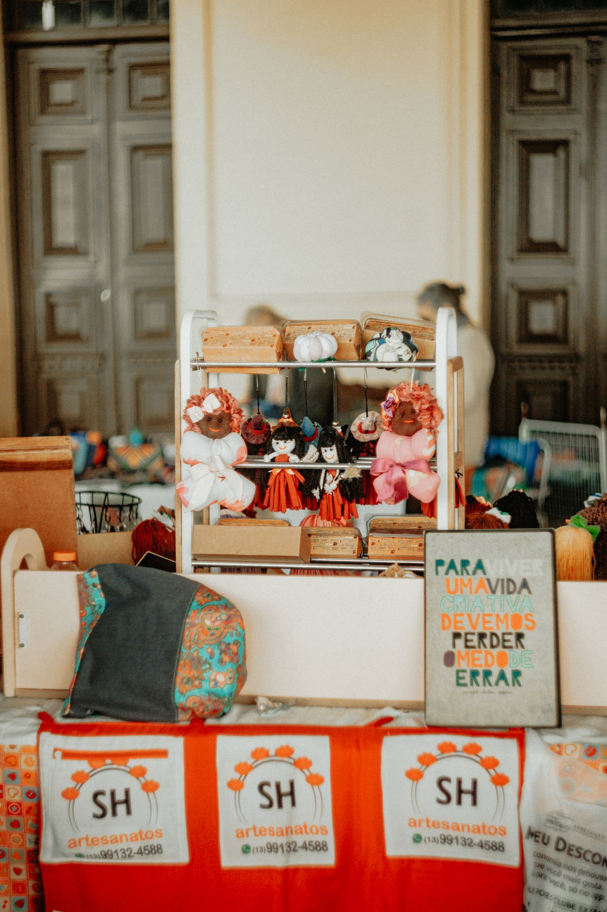
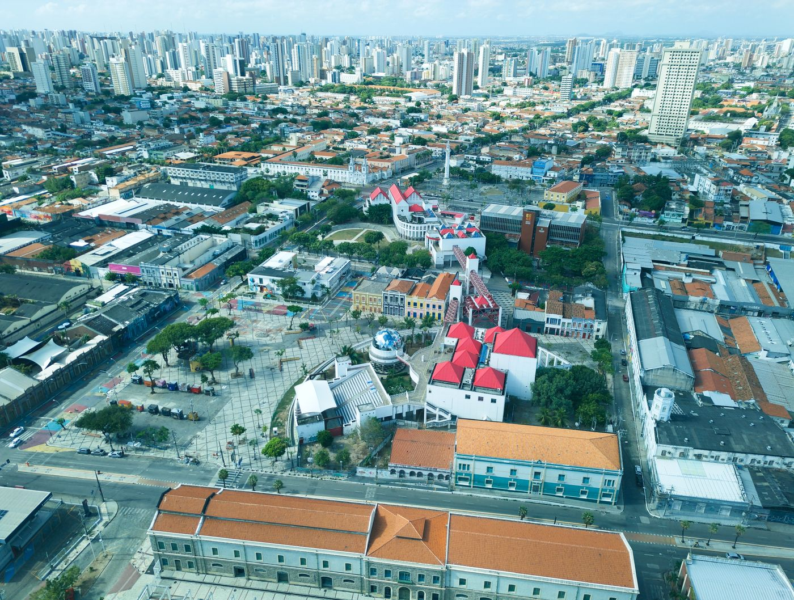

TRANSPARÊNCIA
Créditos das imagens
Fotografias de banco de imagens usadas apenas para ilustrar matérias fictícias. Não são registros dos eventos descritos nas notícias.
Computador com código
Ver fotografia e autoria no Pexels ↗Apresentação musical
Ver fotografia e autoria no Pexels ↗
Bola em campo de futebol
Ver fotografia e autoria no Pexels ↗
Cultivo de vegetais
Ver fotografia e autoria no Pexels ↗
Banca de artesanato
Ver fotografia e autoria no Pexels ↗
Vista de Fortaleza
Ver fotografia e autoria no Pexels ↗Origem: Pexels. Consultar licença. Ilustrações SVG da primeira versão: criadas para este projeto.